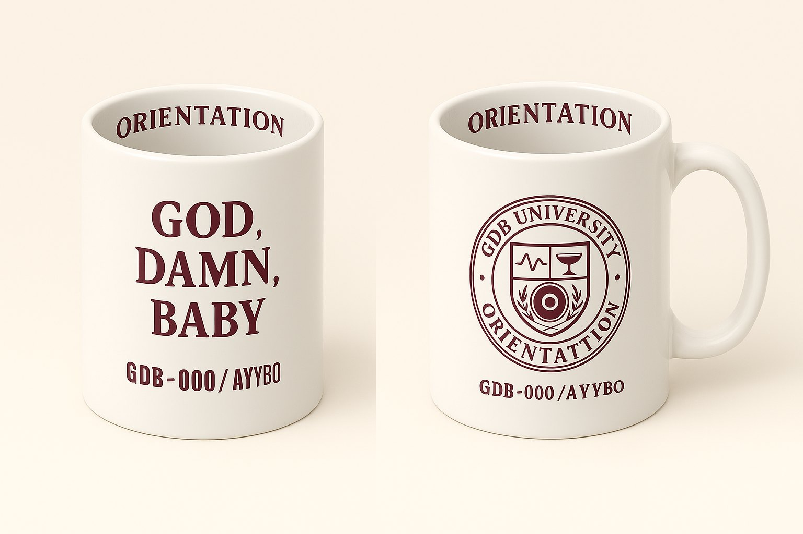
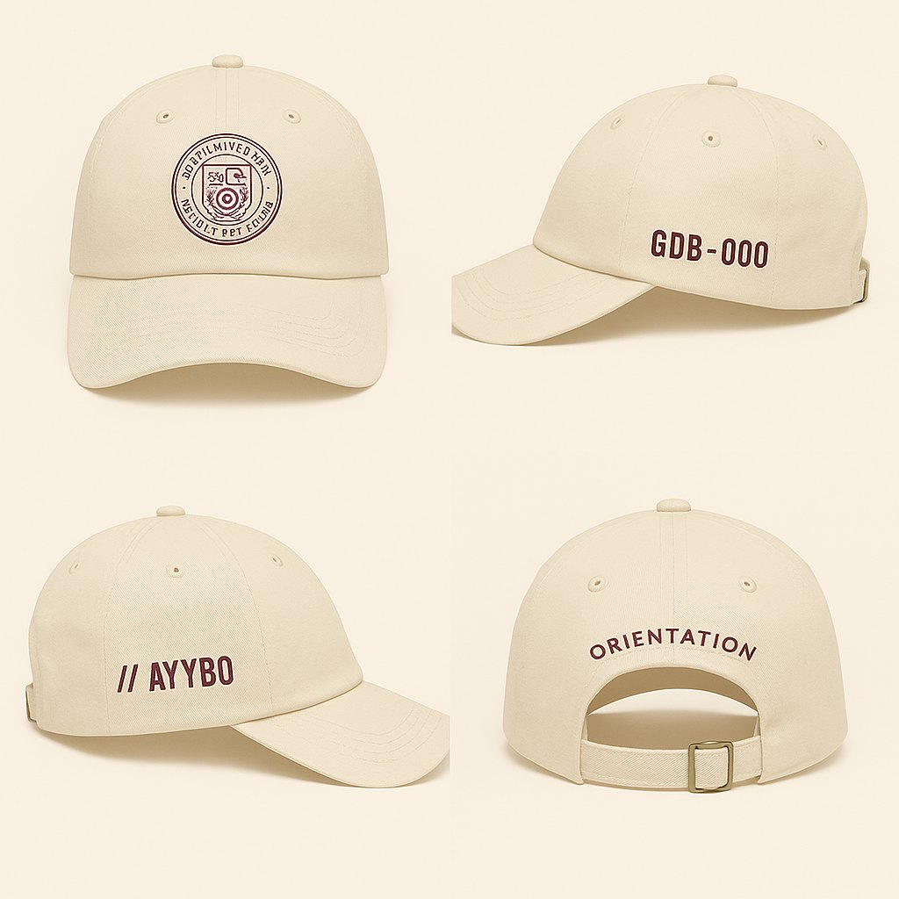
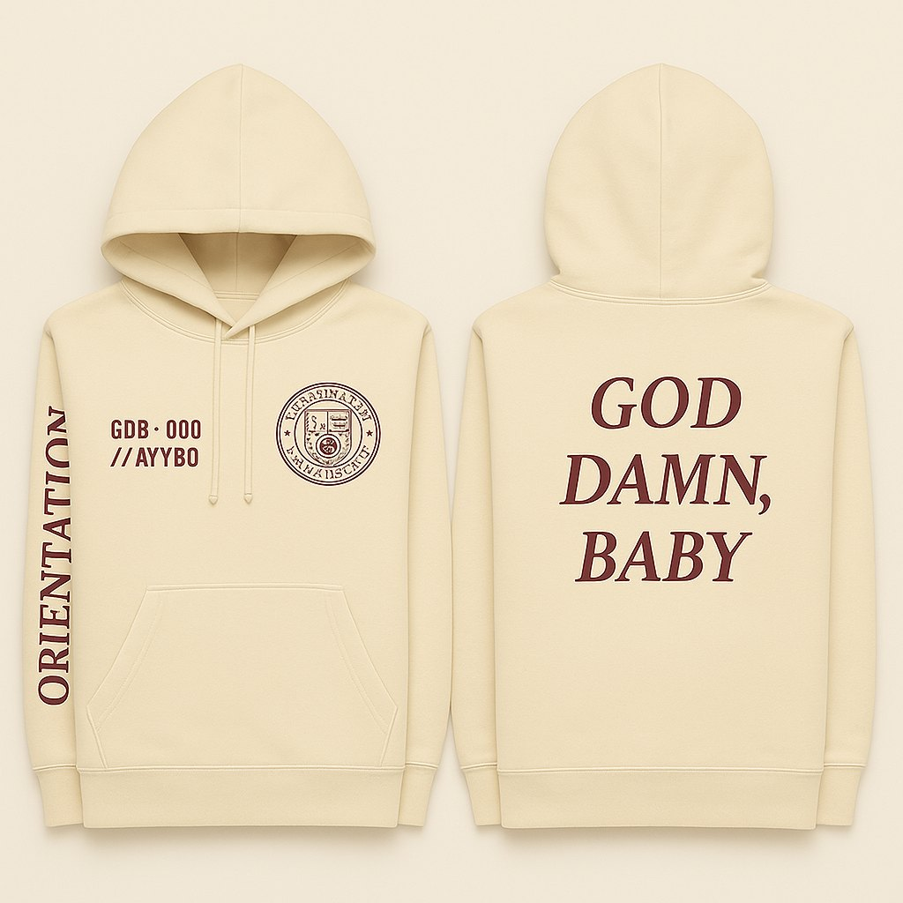
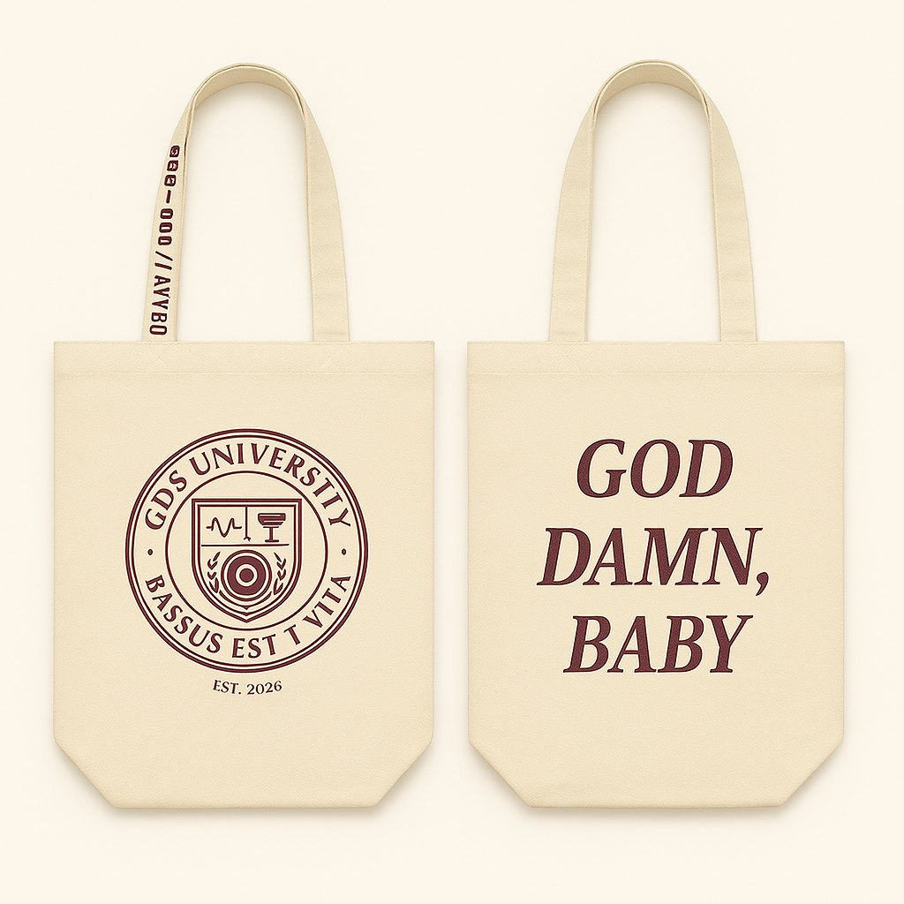
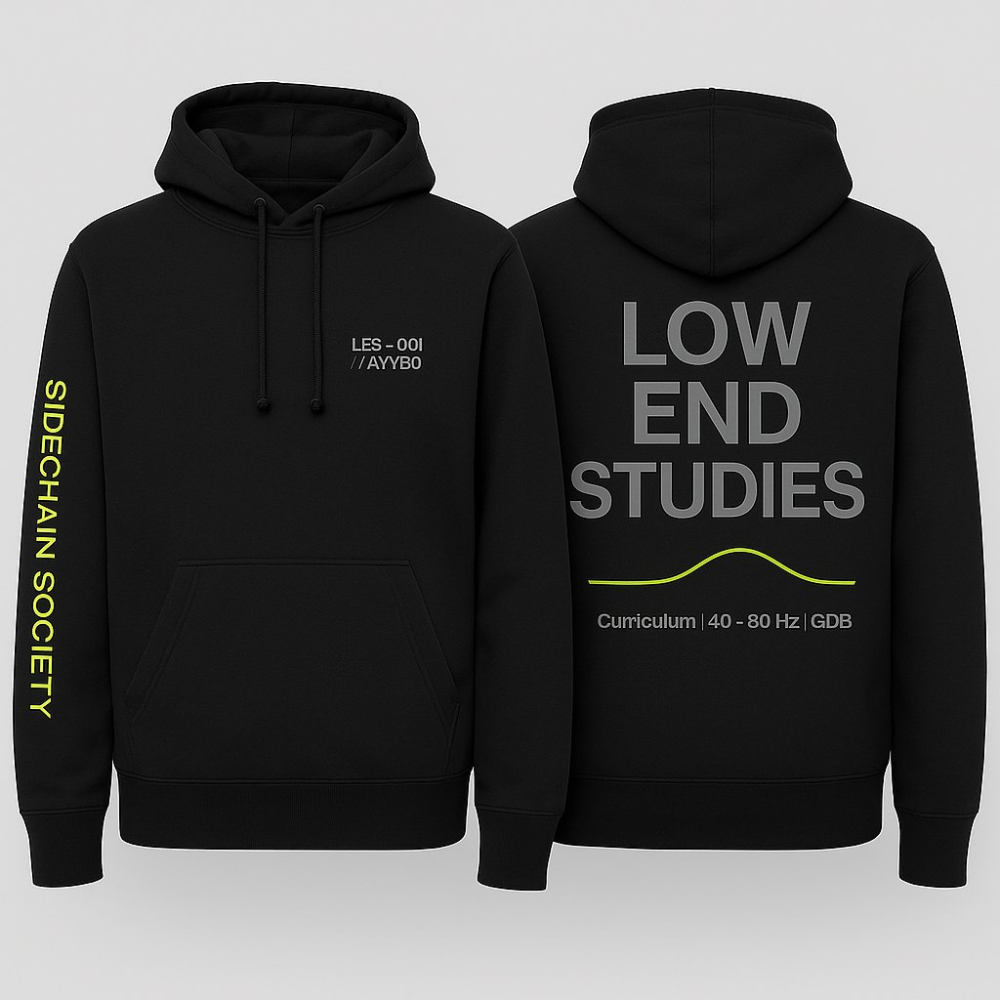
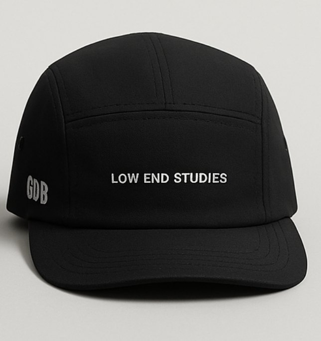
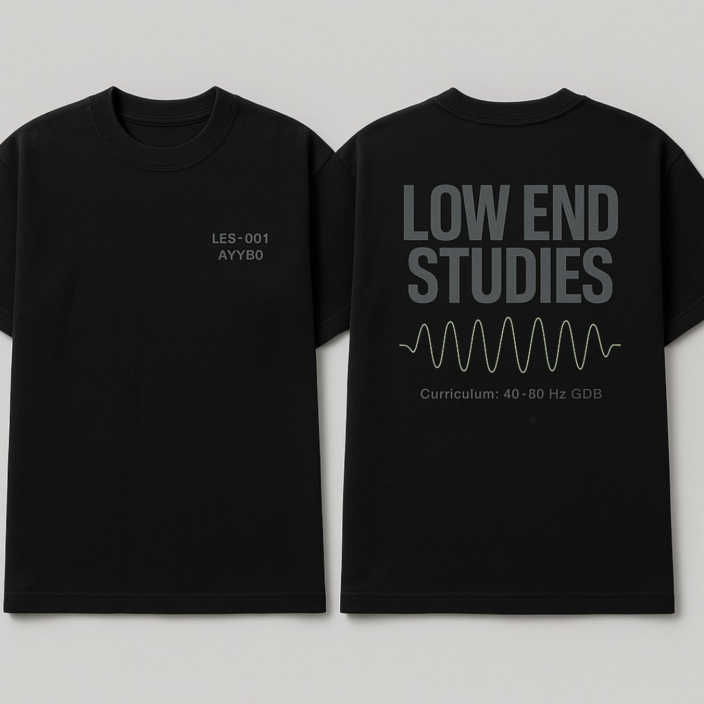
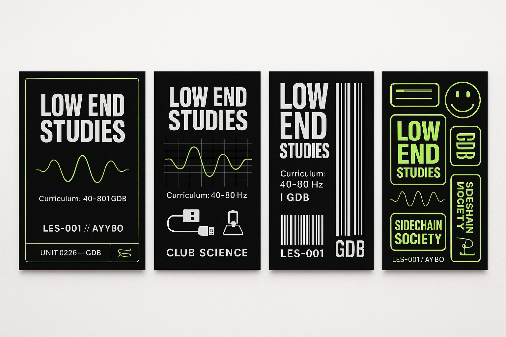

Campus artifacts
Wear the
curriculum.
A showroom for designs that already exist. Not a live checkout.








Campus artifacts
A showroom for designs that already exist. Not a live checkout.







